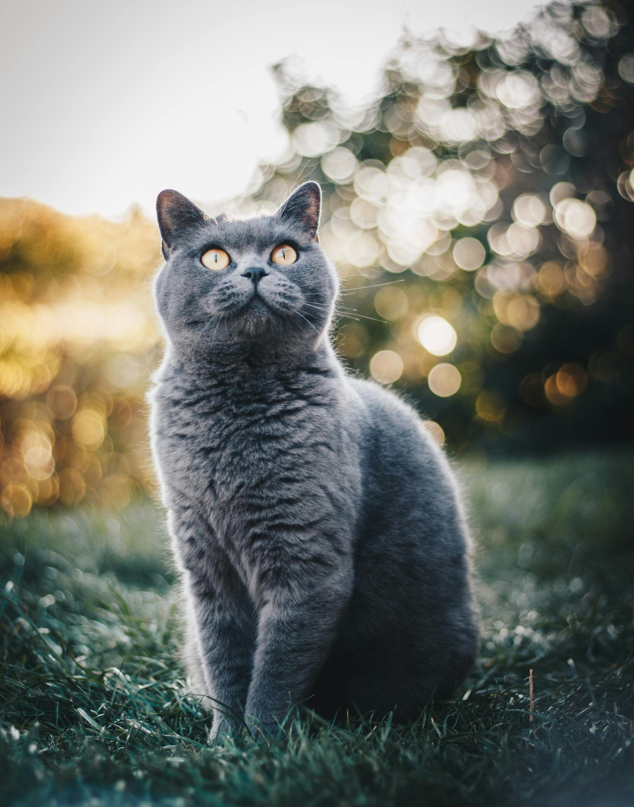

Rotating Navigation
Creating a rotating navigation menu using HTML, CSS, and JavaScript can add an interesting and engaging element to your website. In this example, I'll guide you through creating a simple rotating navigation menu that reveals navigation links when the user clicks on a menu button.
I am Groot
Groot, a beloved character from the Marvel Universe, is known for his distinctive appearance as a tree-like creature and his iconic phrase, "I am Groot." Possessing superhuman strength and regenerative abilities, Groot has become a vital member of the Guardians of the Galaxy in both comic books and the Marvel Cinematic Universe. His limited vocabulary adds charm and depth to his character, and he has evolved from a more monstrous figure in the comics to the lovable Baby Groot in the films. Groot's popularity continues to grow, making him a fan-favorite with his unique personality and emotional moments throughout the series.